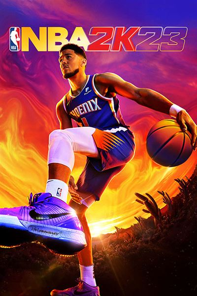

NBA 2K23:
caracteristique du jeux:
| Editeur(s)/Developpeur(s) | 2k Games/Visual Concepts |
|---|
| Sortie France | 08 Sept 2022 |
|---|
| Mode(s) | Jouable en solo |
|---|
| Support(s) | Ps/Xbox/Switch |
|---|
| Langue disponible | Texte en français/Voix en Anglais |
|---|
Synopsis:
NBA 2K23 est l'expérience ultime pour les stars du basket en devenir, vous envoyant dans un voyage immersif et donnant vie à vos rêves NBA. Que vous soyez nouveau dans la série ou un joueur de retour, maîtriser votre métier demande de la pratique et nous sommes là pour vous aider à découvrir les principes fondamentaux du jeu et à améliorer vos compétences. Up Your Game fait exactement ce que son nom l'indique, vous aidant sur le terrain grâce à une série de vidéos, d'articles et plus encore afin que vous puissiez améliorer vos compétences sur le terrain et dans les modes de jeu populaires tels que MyCAREER et MyTEAM. Apprenez des meilleurs du secteur lorsqu'il s'agit de perfectionner votre tir, de comprendre les subtilités de MyTEAM et MyCAREER et de naviguer dans le jeu dans son ensemble.
Points Forts:
- le retour du Jordan Challenge.
- le système de tir, timing plus exigeant et juste.
- Durée de vie conséquent.
- Ajout du nouveau système de fatigue.
- Mon Equipe gagne en profondeur.
- Nouveau décor du mode carrière.
Points Faibles:
- Pas encore compris en plateforme nouvelle génération.
- Encore un système de quêtes fastidieuses.
- Moins d'animations.